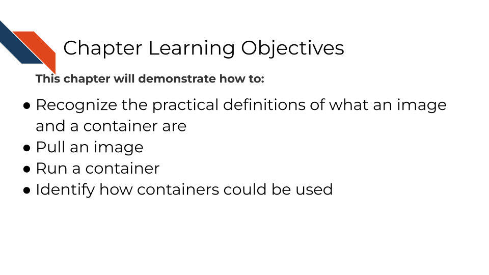
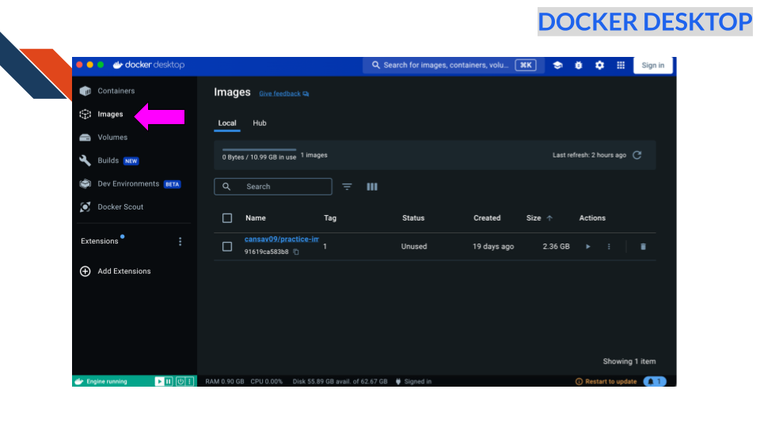

3 Using Containers
Let’s actually dive into using containers. You can follow along with this activity with either Docker or Podman. We recommend using Docker but if for admin reasons you are unable to use Docker, Podman’s commands work nearly identically to Docker.
3.0.1 A note about “window juggling”
When learning another software skill like containers, it sometimes means you’ll have to keep track of more than one window. We call this “Window Juggling”. It’s an overlooked skill but something you’ll become more comfortable with.
IMPORTANT: Use the checkboxes to follow along with each step in the activities! This is to help you keep track because the steps have to be done in order!
3.1 Activity Instructions
3.1.1 Docker
3.1.1.1 Set up
If not already installed, go here to install Docker, following the instructions for your particular operating system.
If you don’t have a Docker account create an account when prompted, or go here.
Start up Docker desktop by double clicking on the app. It may take some time to start up.
3.1.1.2 Get workshop files
Download the files for this activity clicking here: https://github.com/fhdsl/containers-for-scientists-sandbox/archive/refs/heads/main.zip
Put this file on your desktop so it is easily findable.
Double click the zip file (or right click and choose “unzip” or “decompress” to unzip the file.
3.1.1.3 Activity 1: Pull and run a Docker image
This activity is built so that you will encounter errors that this guide will work you through! One of the most common container stumbling blocks is understanding the idea that containers are isolated from your computer.
Which means: If your computer has files, software, or anything else. Your container by default does NOT have it unless you do something to get those files and software on there.
We will encounter both an error when we don’t have a file we need AND an error when we don’t have a software package we need. We will guide you through what to do when these expected errors occur.
3.1.1.4 Step 1: Docker pull
We need to get the Docker image we want to use. We do this by “pulling” it. Pulling is a term used in GitHub terminology too. It just means we’re taking something from the internet and getting a copy locally (on our computer). Pulling is basically like downloading.
Run this command in your Terminal or Command Prompt window:
docker pull cansav09/practice-image:13.1.1.4.1 Step 2: Check what images you have
To see what images we have we can run docker image ls.
Alternatively, you can visit the Images tab of the docker desktop app.
We should see cansav09/practice-image:1 show up in the output.

3.1.1.4.2 Step 3: Use the Run command to start a container from the image!
Remember images can be shared easily but to actually use the stuff we need to turn our image into a container! To do that we will use the docker run command
To launch the image for use, we can use docker run to turn it into a container.
docker run cansav09/practice-image:1Alternatively, we can press the play button for the image in images tab of the desktop app.
To see what containers we have running we have we can run (in a new terminal session):
docker psAlternatively, you can visit the Containers tab of the Docker Desktop app.

Pat yourself on the back! You have a running container!
What can we do with running containers?

3.1.1.4.3 Step 4: Run a single command
To run stuff interactively from the command line we can do:
docker exec -it <PUT_CONTAINER_ID_HERE> bash
You can find the CONTAINER ID in the containers tab of the desktop app or by using the docker container ls command in the terminal. Note that whereas the docker run command creates a new container from a docker image, the docker exec command executes a command inside an already running container. The -it option tells docker to execute the command interactively. In this case the actual command being specified is bash. Altogether the result is an interactive Bash shell inside the already running container.
If you run the above command you should see your terminal/command prompt now have the initial part change to something like:
root@e7b19cfb4461:/Where you’ll noticed the CONTAINER ID is now shown there.
You are now using command line inside of your container. Trying running any bash command like ls to see what files are here for example.
Your screen will end up looking like this (but this printout is from a Mac, windows will look a little different in some parts):
(base) firstnamelastname@FirstNames-MacBook-Pro ~ % docker exec -it e7b19cfb4461 bash
root@e7b19cfb4461:/# ls
bin etc lib libexec mnt rocker_scripts sbin tmp
boot home lib32 libx32 opt root srv usr
dev init lib64 media proc run sys var
root@e7b19cfb4461:/# When you are ready to leave your container type exit and press Enter.
3.1.1.4.4 Step 5: Try calling a script
Make sure you are in the unzipped workshop directory. To run a script using the docker container we could just add reference to a script at the end.
cd containers-for-scientists-sandbox-main
docker exec -it <PUT_CONTAINER_ID_HERE> bash run_analysis.shBUT! You will find that this command won’t work yet though, why?
bash: run_analysis.sh: No such file or directoryQuestion: Does our container have all of the same files that our computer has?

This won’t work because the file run_analysis.sh is not a file that our container has. Docker containers do not have all the files that our computer does; they only have the files we add to it.
3.1.2 Podman
3.1.2.1 Set up Podman
Go here to install Podman, following the instructions for your particular operating system.
Open up your command line.
Start up Podman by running the following:
podman machine init
podman machine start3.1.2.2 Get workshop files
Download the files for this activity clicking here: https://github.com/fhdsl/containers-for-scientists-sandbox/archive/refs/heads/main.zip
Put this file on your desktop so it is easily findable.
Double click the zip file (or right click and choose “unzip” or “decompress” to unzip the file.
This activity is built so that you will encounter errors that this guide will work you through! Most common container stumbling block is understanding the idea that containers are isolated from your computer
Which means: If your computer has files, software, or anything else. Your container by default does NOT have it unless you do something to get those files and software on there.
We will encounter both an error of when we don’t have a file we need AND an error of when we don’t have a software package we need. We will guide you through what to do when these expected errors occur.
3.1.2.2.1 Step 1: Podman pull
We need to get the image we want to use. We do this by “pulling” it. Pulling is a term used in GitHub terminology too. It just means we’re taking something from the internet and getting a copy locally (on our computer).
Run this command in your Terminal or Command Prompt window:
podman pull cansav09/practice-image:1If this command is running properly you should see some output that looks like this:

3.1.2.2.2 Step 2: Check what images you have
To see what images we have we can run podman image ls.
You should see cansav09/practice-image:1 show up in the output and it will look a bit like this below:
docker.io/cansav09/practice-image 1 91619ca583b8 1 month ago 2.39 GB3.1.2.2.3 Step 3: Run the image to start a container!
Remember images can be shared easily but to actually use the stuff we need to turn our image into a container! To do that we will do podman run
To launch the image for use, we can use podman run to turn it into a container.
podman run cansav09/practice-image:1If this command has run properly it will return something like this:

Don’t worry too much about all this output, every image is configured differently and this output will change depending on that.
To see what containers we have running we have we can run:
podman psYour output will look a little like this. NOTE though that the CONTAINER ID and NAMES are randomly generated for each container and will change, so that part won’t be the same!
CONTAINER ID IMAGE COMMAND CREATED STATUS PORTS NAMES
e7b19cfb4461 docker.io/cansav09/practice-image:1 /init 2 minutes ago Up 2 minutes 8787/tcp hopeful_proskuriakovaPat yourself on the back! You have a running container!
What can we do with running containers?
3.1.2.2.4 Step 4: Run the container interactively
To run stuff interactively from the command line we can do:
But you’ll need to replace the <PUT_CONTAINER_ID_HERE> portion of this command with the CONTAINER ID reported when you ran podman ps.
podman exec -it <PUT_CONTAINER_ID_HERE> bashIf you run this you should see your terminal/command prompt now have the initial part change to something like:
root@e7b19cfb4461:/Where you’ll noticed the CONTAINER ID is now shown there.
You are now using command line inside of your container. Trying running any bash command like ls to see what files are here for example.
Your screen will end up looking like this:
(base) firstnamelastname@FirstNames-MacBook-Pro ~ % podman exec -it e7b19cfb4461 bash
root@e7b19cfb4461:/# ls
bin etc lib libexec mnt rocker_scripts sbin tmp
boot home lib32 libx32 opt root srv usr
dev init lib64 media proc run sys var
root@e7b19cfb4461:/# When you are ready to leave your container type exit and press Enter.
3.1.2.2.5 Step 5: Try calling a script
To run a script using the container we could just add reference to a script at the end:
podman exec -it <PUT_CONTAINER_ID_HERE> bash run_analysis.shBUT! You will find that this command won’t work yet though, why?
This won’t work because the file run_analysis.sh is not a file that our container has. Docker containers do not have all the files that our computer does; they only have the files we add to it.
bash: run_analysis.sh: No such file or directoryQuestion: Does our container have all of the same files that our computer has?
This won’t work because the file run_analysis.sh is not a file that our container has. Docker containers do not have all the files that our computer does; they only have the files we add to it.